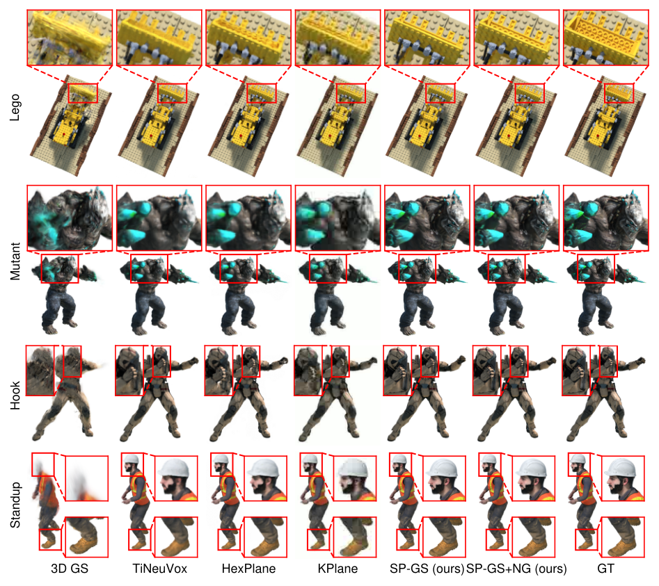
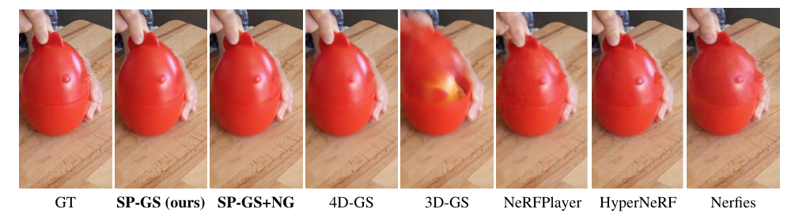
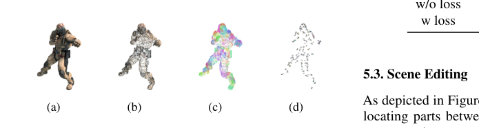
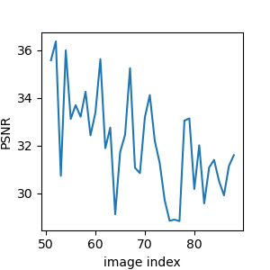

Superpoint
简单摘要
这篇工作要解决的问题是：在动态场景中渲染新颖的视图图像是一项至关重要但具有挑战性的任务。
对应的核心做法是：目前的方法主要利用基于 NeRF 的方法来表示静态场景，并使用额外的时变 MLP 来建模场景变形，导致渲染质量相对较低且推理速度较慢。
从机制上看，关键设计在于：具体来说，我们的框架首先采用显式 3D 高斯函数来重建场景，然后将具有相似属性（例如旋转、平移和位置）的高斯函数聚类为超点。
训练或推理层面的重点是：在这些超级点的支持下，我们的方法成功地将 3D 高斯分布扩展到动态场景，而计算费用仅略有增加。
实验层面的主要信号是：除了在高分辨率下实现最先进的视觉质量和实时渲染之外，超点表示还提供了更强的操控能力。


简而言之，这篇论文关注的核心是：这篇工作要解决的问题是：在动态场景中渲染新颖的视图图像是一项至关重要但具有挑战性的任务。 对应的核心做法是：目前的方法主要利用基于 NeRF 的方法来表示静态场景，并使用额外的时变 MLP 来建模场景变形，导致渲染质量相对较低且推理速度较慢。 从机制上看，关键设计在于：具体来说，我们的框架首先采用…
这篇工作要解决的问题是：合成 3D 场景的高保真新颖视图图像对于从游戏、拍摄到 AR/VR 等各种工业应用至关重要。
对应的核心做法是：虽然许多后续工作侧重于提高静态场景的渲染质量或训练和渲染速度，但另一项工作建议将设置扩展到动态场景。
从机制上看，关键设计在于：尽管人们已经做出了各种尝试来提高效率和动态渲染质量，但引入额外的时变 MLP 来对动态场景中的复杂运动进行建模将不可避免地导致训练过程中计算成本的激增……。
训练或推理层面的重点是：最近，3D 高斯分布 (3D-GS) 通过引入一种新颖的点状表示（称为 3D 高斯），成功实现了具有高视觉质量的实时渲染。
实验层面的主要信号是：但它主要处理静态场景。
核心创新
综合引言与方法部分，这篇论文的核心创新可以概括为以下几方面：
1）问题定义与研究动机
这篇工作要解决的问题是：合成 3D 场景的高保真新颖视图图像对于从游戏、拍摄到 AR/VR 等各种工业应用至关重要。
对应的核心做法是：虽然许多后续工作侧重于提高静态场景的渲染质量或训练和渲染速度，但另一项工作建议将设置扩展到动态场景。
从机制上看，关键设计在于：尽管人们已经做出了各种尝试来提高效率和动态渲染质量，但引入额外的时变 MLP 来对动态场景中的复杂运动进行建模将不可避免地导致训练过程中计算成本的激增……。
训练或推理层面的重点是：最近，3D 高斯分布 (3D-GS) 通过引入一种新颖的点状表示（称为 3D 高斯），成功实现了具有高视觉质量的实时渲染。
实验层面的主要信号是：但它主要处理静态场景。
2）方法框架与核心模块
这篇工作要解决的问题是：本节首先简要介绍第 3 节中的 3D 高斯分布。
对应的核心做法是：随后，在第二节中，我们详细介绍了如何将时变变形网络应用于超点，以预测旋转和平移以在任何时间步渲染图像。
从机制上看，关键设计在于：为了充分利用一个超点内的尽可能刚性的特征，我们的方法还在第二节中引入了一种属性重建损失。
训练或推理层面的重点是：我们还在本节中说明如何使用可学习的关联矩阵将 3D 高斯聚合为超点。
实验层面的主要信号是：此外，优化和推理的一些细节在第 2 节中进行了解释。
3）实验设计与工程价值
这篇工作要解决的问题是：[1] 我们通过对三个数据集的实验证明了我们提出的方法的效率和有效性。
对应的核心做法是：具有 8 个场景的合成数据集 D-NeRF，真实世界数据集 HyperNeRF 和 NeRF-DS。
从机制上看，关键设计在于：对于所有实验，我们报告以下指标。
训练或推理层面的重点是：PSNR、SSIM、MS-SSIM、LPIPS、尺寸（渲染分辨率）和 FPS（渲染速度）。
实验层面的主要信号是：所有实验均在具有 32GB 内存的 NVIDIA V100 GPU 上进行。
技术细节
下面按照论文的方法章节结构展开，重点说明模型的关键模块、公式设计和训练策略。
这篇工作要解决的问题是：本节首先简要介绍第 3 节中的 3D 高斯分布。
对应的核心做法是：随后，在第二节中，我们详细介绍了如何将时变变形网络应用于超点，以预测旋转和平移以在任何时间步渲染图像。
从机制上看，关键设计在于：为了充分利用一个超点内的尽可能刚性的特征，我们的方法还在第二节中引入了一种属性重建损失。
训练或推理层面的重点是：我们还在本节中说明如何使用可学习的关联矩阵将 3D 高斯聚合为超点。
实验层面的主要信号是：此外，优化和推理的一些细节在第 2 节中进行了解释。
$$ G_i(\bm{x}) = \exp\left(-\frac{1}{2}(\bm{x}-\gsP_i)^{\top}\mathbf{\Sigma}_i^{-1}(\bm{x}-\gsP_i)\right). $$
这条公式用于定义模型中的核心计算关系：左侧给出目标量，右侧由输入与参数共同决定。阅读时可先关注 G_i、x 的物理/几何含义，再看它们如何影响训练目标或渲染结果。
$$ \mathbf{\Sigma}' = \mathbf{J}\mathbf{W}\mathbf{\Sigma}\mathbf{W}^{\top}\mathbf{J}^{\top}, \quad \gsP' = \mathbf{J}\mathbf{W}\gsP, $$
这条公式用于定义模型中的核心计算关系：左侧给出目标量，右侧由输入与参数共同决定。阅读时可先关注 J、W 的物理/几何含义，再看它们如何影响训练目标或渲染结果。
$$ \begin{split} C(\bm{p}) & = \sum_{i=1}^{P}\bm{c}_i\alpha_i \prod_{j=1}^{i-1}(1-\alpha_j), \\ \alpha_i & = \bm{\sigma}_i \exp\left(-\frac{1}{2}(\bm{p}-\gsP'_i)^{\top}\mathbf{\Sigma}'_i(\bm{p}-\gsP'_i)\right), \end{split} $$
这条公式用于定义模型中的核心计算关系：左侧给出目标量，右侧由输入与参数共同决定。阅读时可先关注 C、p、i、P 的物理/几何含义，再看它们如何影响训练目标或渲染结果。
$$ \loss_{img} = (1-\lambda)\loss_{1} + \lambda \loss_{\mathrm{D-SSIM}}, $$
这条公式用于定义模型中的核心计算关系：左侧给出目标量，右侧由输入与参数共同决定。阅读时可先关注 D 的物理/几何含义，再看它们如何影响训练目标或渲染结果。
$$ \gsP_i^t = \spR^t_j \gsP^c_i + \spT^t_j, \gsR_i^t = \spR^t_j \gsR_i^c. $$
这条公式用于定义模型中的核心计算关系：左侧给出目标量，右侧由输入与参数共同决定。阅读时可先关注 t、t_j、c_i、c 的物理/几何含义，再看它们如何影响训练目标或渲染结果。
$$ (\spR_j^t, \spT_j^t) = \mathcal{F}(\gamma(\spP^c_j), \gamma(t)), $$
这条公式用于定义模型中的核心计算关系：左侧给出目标量，右侧由输入与参数共同决定。阅读时可先关注 t、F、c_j 的物理/几何含义，再看它们如何影响训练目标或渲染结果。


把全文方法串起来看，这篇论文的逻辑基本都遵循同一条主线：先把输入组织成更容易处理的表示，再通过模型结构和损失函数把这个表示推向目标输出，最后用可视化与数值实验共同证明该设计有效。
实验结论
实验部分主要回答两个问题：第一，方法是否真的优于已有基线；第二，这种优势来自哪一个设计决策。
这篇工作要解决的问题是：[1] 我们通过对三个数据集的实验证明了我们提出的方法的效率和有效性。
对应的核心做法是：具有 8 个场景的合成数据集 D-NeRF，真实世界数据集 HyperNeRF 和 NeRF-DS。
从机制上看，关键设计在于：对于所有实验，我们报告以下指标。
训练或推理层面的重点是：PSNR、SSIM、MS-SSIM、LPIPS、尺寸（渲染分辨率）和 FPS（渲染速度）。
实验层面的主要信号是：所有实验均在具有 32GB 内存的 NVIDIA V100 GPU 上进行。

- 方法在核心指标上的优势与结构设计和训练目标直接相关；
- 消融实验表明，拿掉关键模块后性能与结果质量都有明显回落；
- 论文不仅比较数值，也关注可视化质量、稳定性和泛化能力等更贴近真实使用的信号。
理解评价
这篇工作要解决的问题是：与3D-GS类似，现实世界场景的重建需要稀疏点云来初始化3D场景。
对应的核心做法是：然而，对于像 COLMAP 这样专为静态场景设计的软件来说，初始化点云具有挑战性，从而导致相机姿态减少。
从机制上看，关键设计在于：因此，这些问题可能会阻碍我们的 SP-GS 达到预期结果。
训练或推理层面的重点是：在 3D-GS 的基础上，我们的方法涉及将具有相似运动的高斯分组为超点，为高斯光栅化增加极小的负担。
实验层面的主要信号是：实验结果证明了我们的方法具有卓越的视觉质量和渲染速度，同时我们的框架还可以支持各种下游应用程序。
如果把它当成研究参考，建议重点关注三件事：第一，这套方法真正依赖的归纳偏置是什么；第二，实验中真正拉开差距的模块是哪一个；第三，它的局限究竟来自数据、算力还是监督信号本身。
以下相关论文可以作为进一步追踪的入口：